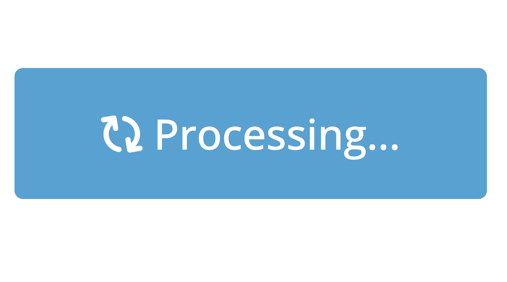

install.packages(c("shiny", "bslib"))

The Shiny team is delighted to announce another round of updates for 9 different R packages. In this post, we’ll introduce three notable things: non-blocking operations, a JavaScript error dialog and many bslib improvements. For a detailed list of changes, be sure to check out the release notes section of this post.
Although 9 packages received updates, the focus of this post is on shiny and bslib, which you can install with the following command:
Non-blocking operations
The biggest new feature in this release is the ability to run truly non-blocking operations in Shiny via ExtendedTask.
The promise of async programming
For years, we’ve promoted asynchronous programming with the promises package as a way to improve the performance of large Shiny apps. promises can be used to prevent operations in one user session from blocking operations in another user’s session, helping scale your app to multiple concurrent users supported by a single R process.
However, promises alone won’t prevent an operation in one session from blocking other operations in that same session.
Introducing ExtendedTask
We’re introducing ExtendedTask as a new way to manage long-running operations that won’t block within or across sessions, meaning that a user can launch an ExtendedTask and still interact with the app while it’s running.
Additionally, we’ve found that ExtendedTask provides an elegant way to manage async operations. Within the task, you’ll use promises to create the async operation, but in the rest of your app you can use ExtendedTask methods to start the task or react to results when they arrive.
As a result, ExtendedTask is now our recommended starting point for non-blocking tasks in Shiny. We’d love to show you a full example right now, but for the sake of space in this blog post we’ll urge you to visit the Non-blocking operations article, also on this blog, for a complete introduction.
A new task button
As a companion to ExtendedTask, we’ve created bslib::input_task_button(), a special button that displays visual feedback when a task is in progress. As it turns out, input_task_button() provides a nice experience for any long-running task, not just ExtendedTask. Think of it like an actionButton() that, when clicked, shows a busy indicator (and prevents further clicks) up until the next time the server is idle. Here’s an example of it in action in a basic Shiny app:
library(shiny)
library(bslib)
ui <- page_fixed(
input_task_button("launch_task", "Launch task"),
textOutput("result")
)
server <- function(input, output) {
output$result <- renderText({
req(input$launch_task) # require a button press to launch
Sys.sleep(3) # simulate expensive operation
paste("Number of clicks:", input$launch_task)
})
}
shinyApp(ui, server)
JS error dialog
Another exciting new feature is Shiny’s JavaScript error dialog, which makes critical client-side errors more discoverable. To use the error dialog, turn on Shiny’s developer features by calling shiny::devmode() before running your app locally1.
In addition to the dialog, we’ve also started throwing more errors in situations where behavior is undefined, such as when two inputs (or outputs) have the same ID. For example:
library(shiny)
library(bslib)
ui <- page_fixed(
textInput("x", NULL),
textInput("x", NULL)
)
shinyApp(ui, \(...) {})bslib improvements
In addition to the new input_task_button(), bslib received many improvements and fixes in this release. Most of these improvements are focused on sidebar()s, cards()s, layout_columns()s, and the default bs_theme().
To highlight a new feature, card() now reports its full_screen state to the server, which can be useful for various things like providing more context in a full-screen view. Just give the card an id and read input${id}_full_screen in the server, replacing {id} with the actual id value of your card.
Code
library(shiny)
library(bslib)
library(ggplot2)
ui <- page_fixed(
card(
full_screen = TRUE,
id = "my_card",
card_header("My plot"),
# fill ensures the plot fills when full_screen
uiOutput("visual", fill = TRUE)
)
)
server <- function(input, output, session) {
output$visual <- renderUI({
plot <- plotOutput("plot")
if (isTRUE(input$my_card_full_screen)) {
# In full screen mode, show the plot plus some additional text
layout_columns(
plot,
lorem::ipsum(2),
col_widths = c(8, 4)
)
} else {
# otherwise, just show the plot
plot
}
})
output$plot <- renderPlot({
ggplot(mtcars, aes(mpg, wt)) +
geom_point() +
theme_minimal(base_size = 20)
})
}
shinyApp(ui, server)Release notes
This post doesn’t cover all of the changes and updates that happened in the Shiny universe in this release cycle. To learn more about specific changes in each package, dive into the release notes linked below!
Big shout out to everyone involved! 💙 We’d want to extend a huge thank you to everyone who contributed pull requests, bug reports and feature requests. Your contributions make Shiny brilliant!
bslib v0.7.0
@benubah, @CIOData, @clementlefevre, @cpsievert, @Damonsoul, @davemcg, @davos-i, @gadenbuie, @howardbaek, @ideusoes, @jcheng5, @kalimu, @lukebandy, @malcolmbarrett, @Milko-B, @ocstringham, @rickhelmus, @royfrancis, @stla, @tai-mi, @tanho63, @toxintoxin, @TymekDev, @udurraniAtPresage, @WickM, @wish1832, and @zross.
htmltools v0.5.8
@cpsievert, @Emanuel-1986, @gadenbuie, @olivroy, @romainfrancois, and @russHyde.
httpuv v1.6.12
@cpsievert, @gadenbuie, and @nunotexbsd.
leaflet v2.2.2
@ainefairbrother, @amegbor, @asitemade4u, @bmaitner, @cderv, @cpsievert, @gadenbuie, @jebyrnes, @mkoohafkan, @olivroy, @olyerickson, @SpeckledJim2, and @yoelii.
plotly v4.10.4
@AdroMine, @AlexisDerumigny, @aloboa, @aniskara, @Balaika, @baranovskypd, @brennanfalcy, @Brishan200, @byandell, @cpsievert, @dgrignol, @dvg-p4, @FunctionalUrology, @jeffandcyrus, @Jensxy, @JinTonique, @KarlKaise, @KatChampion, @lukelockley, @meldarionqeusse, @morrisseyj, @mot12341234, @msgoussi, @nlooije, @noamross, @olivroy, @OverLordGoldDragon, @peter-atkinson, @salim-b, @syeddans, @TheAnalyticalEdge, @tomasnobrega, and @TopBottomTau.
plumber v1.2.2
@alexverse, @apalacio9502, @apriandito, @ArcadeAntics, @aronatkins, @BioTimHaley, @ColinFay, @cpsievert, @edavidaja, @enriquecaballero, @ex0ticOne, @feodosiikraft, @fmalk, @GraphZal, @hedsnz, @howardbaek, @ihamod, @jangorecki, @jasonheffner, @jonthegeek, @jpdugo, @jwebbsoma, @king-of-poppk, @m-muecke, @meztez, @MJSchut, @mmuurr, @pietervosnl, @pinduzera, @r2evans, @schloerke, @sdgd165, @slodge, @slodge-work, @statasaurus, @timeddilation, @tylerlittlefield, and @wikithink.
sass v0.4.9
@cpsievert, @jeroen, and @yulric.
shiny v1.8.1
@apalacio9502, @Arthfael, @avoidaway, @bioinformzhang, @chendaniely, @cpsievert, @Daishoulu, @davidmacro, @etbrand, @gadenbuie, @gunawebs, @hadley, @HugoGit39, @ismirsehregal, @jcheng5, @JohnCoene, @jsendak, @laresbernardo, @MartinBaumga, @nstrayer, @olivroy, @Roleren, @RSchwinn, @saleforecast1, @sharitian, @skaltman, @stla, @trafficonese, @TymekDev, @ugurdar, and @wch.
thematic v0.1.5
@cpsievert, and @teunbrand.